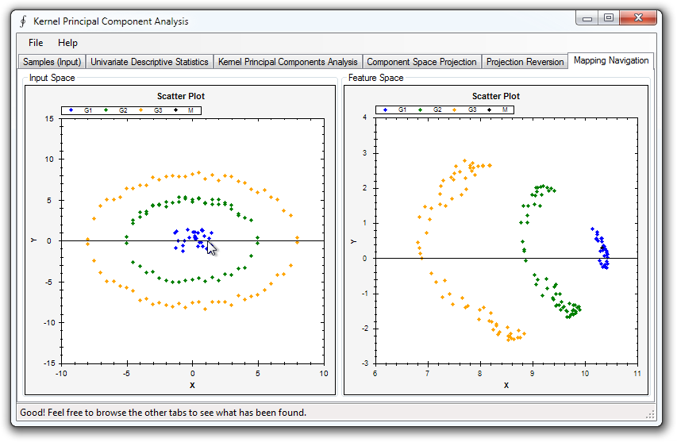
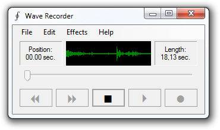

The Accord.NET Framework is a C# machine learning and image processing
framework for .NET - as well as a complete framework for building computer vision,
audition, signal processing and statistics applications. Sample applications provide
a fast start to get up and running quickly, and an extensive documentation helps
fill in the details.

Parametric and non-parametric estimation of more than 40 distributions. Univariate
distributions such as
Normal,
Cauchy,
Hypergeometric,
Poisson,
Bernoulli, and specialized distributions such as the
Kolmogorov-Smirnov,
Nakagami,
Weibull, and
Von-Mises distributions. Multivariate Multivariate
distributions such as the
multivariate Normal,
Multinomial,
Independent,
Joint and
Mixture distributions.

Kernel Support Vector Machines, Multi-class and Multi-label machines, Sequential
Minimal Optimization, Least-Squares Learning, probabilistic learning, including
special methods for linear machines such as LIBLINEAR's methods for Linear Coordinate
Descent, Linear Newton Method, Probabilistic Coordinate Descent, Probabilistic Coordinate
Descent in the Dual, Probabilistic Newton Method for L1 and L2 machines in both
the dual and primal formulations.

Interest point detectors (Harris, SURF and FAST), image matching and image stitching
methods. Can create integral images and other image transformations, plus additional
image filters for image processing a applications.

Load, parse, save, filter and transform
audio signals, such as applying
audio processing filters in both space and
frequency domain.
WAV files,
audio capture, time-domain filters such as
envelope,
high-pass,
low-pass,
wave rectification filters. Frequency-domain
operators such as
differential rectification filter and
comb filter with Dirac's delta functions. Signal generators for
Cosine,
Impulse,
Square signals.
.png)
Real-time face detection and tracking, as well as general methods for detecting,
tracking and transforming objects in image streams. Contains cascade definitions,
Camshift and Dynamic Template Matching trackers.

Sample applications help you start writing your applications quickly. Just get one
of the sample applications that is closest to your goal, and start from there.

Strategy and template method patterns help you swap learning algorithms quickly.
Create, build and compare different approaches without delving too deep in code.

Stackoverflow is continuosly monitored for new questions containing the "Accord.NET"
tag. Ask your new question and mark it with this tag, and it will be answered in
a minute by the framework authors and the user community.